Project information
- https://www.medicalnewstoday.com/articles/154543.php
- Diagnostic and Statistical Manual of Mental DisordersAmerican Psychiatric Associati (5th ed.). Arlington: American Psychiatric Publishing. 2013. pp. 189–195. ISBN 978-0890425558.
- "Depression". NIMH. May 2016. Archived from the original on 5 August 2016. Retrieved 31 July 2016.
- "Schizophrenia Fact sheet N°397". WHO. September 2015. Archived from the original on 18 October 2016. Retrieved 3 February 2016.
- http://www.businessdictionary.com/definition/situation-analysis.html
- Dhaka Tribune, 2018
- http://www.who.int/mental_health/bangladesh_who_aims_report.pdf
- https://www.blast.org.bd/content/pressrelease/19-04-2017-Press-Release-Eng.pdf
- Dhaka Tribune,2019
- Mental Health Status of Adolescents in South-East Asia: Evidence for Action, April, 2017
- Eisenberg, D., Gollust, S. E., Golberstein, E., & Hefner, J. L. (2007). Prevalence and correlates of depression, anxiety, and suicidality among university students. American Journal of Orthopsychiatry, 77(4), 534–542.
- https://www.researchgate.net/publication/330994184_Mental_Health_Problems_among_Bangladeshi_Students_Prevalence_and_Associated_Predictors
- https://www.ccohs.ca/oshanswers/psychosocial/mentalhealth_intro.html
Project 9
Course Code and Name: MSJ11401 Development Communication
Project Name: Development Communication Campaign Plan
Project Title:
Date of Project:
Project Description:
As our final assignment for this semester, we were required to create a campaign plan. We spoke about many social and environmental concerns that needed to be considered throughout the brainstorming session. By discussing all of our points of view, we were able to think more logically and finally find common ground. To conduct an awareness campaign on the title topic ‘Its ok not to be ok’. This is an increasing concern for the mental health and well-being of the students. It should be considered as a public health issue in Bangladesh. And that is why we will conduct ‘Individual Behavior Change Campaign’ in order to aware individuals about mental health that lead to social problems or promote awareness that led to improved individual or social being. As our goal to change the point of view of the society towards mental health related issues, this is also a Social mobilization campaign.
Project
Justification:
All the students may have to faced many kinds of
situation in their life, like study pressure, family and relationship problems,
financial issues, better job expectation in future, addiction to drugs etc.
because of these issues most of the students faces many kinds of mental
disorder. And when they face any mental disorder, they often try to stay alone
and become rude to others. In this situation they often do mistakes in their
works and studies. They don’t take any necessary steps for curing. Most of them
think that the people of this society will treat him/her as a mad if he/she
goes to any psychologist and just break this narrow mindset and stereotype we
decided to work on this project.
Development Communication
Proposal
On
Awareness Campaign to Improve Mental health among ULAB Students
Submitted to:
Kazi Mahmudur Rahman, PhD
Associate Professor
School of Social Science (SSS)
Submitted by:
Samiul islam 173012001
Md. Farhan Shahriar Samir 161012032
Md. Eanur Hossain 162012007
Ronjon Mir Mohsin 161012025
Introduction
The problems regarding mental health are increasing swiftly in this century for many reasons but at first, we should know what mental health really is. According to Timothy J. Legg, Ph.D., CRNP, Mental health refers to our cognitive, behavioral, and emotional wellbeing - it is all about how we think, feel, and behave. World Health Organization (WHO) says mental health is: “a state of well-being in which the individual realizes his or her own abilities, can cope with the normal stresses of life, can work productively and fruitfully, and is able to make a contribution to his or her community."
According to Canadian Center for Occupational Health and Safety (CCOHS):
Mental health is a state of well-being in which a person understands his or her own abilities, can cope with the normal stresses of life, can work productively and fruitfully, and is able to make a contribution to his or her community.
Both physical and mental healths are the result of a complex interplay between many individual and environmental factors, including:
1. Family history of illness and disease/genetics
2. Lifestyle and health behaviors (e.g., smoking, exercise, substance use)
3. Levels of personal and workplace stress
4. Exposure to toxins
5. Exposure to trauma
6. Personal life circumstances and history
7. Access to supports (e.g., timely healthcare, social supports)
8. Coping skills
When the demands placed on someone exceed their resources and coping abilities, their mental health will be negatively affected. Two examples of common demands are: i) working long hours under difficult circumstances, and ii) caring for a chronically ill relative. Economic hardship, unemployment, underemployment and poverty also have the potential to harm mental health.
Mental health can affect out daily life including one’s ability to obtain balance between life activities and psychological resilience, even one’s physical health. Almost everyone is prone to mental health issues no matter what one’s age is, no matter if the person is male or female, financially stable or not. Although, most of the senior people reject the term “mental illness”.
Common Disorders
1. Anxiety disorders
This is the most common types of mental illness. Anxiety disorders are a group of mental disorders characterized by significant feelings of anxiety and fear; these feelings may cause physical symptoms, such as a fast heart rate and shakiness.
2. Major depressive disorder
Also known simply as Depression, is a mental disorder characterized by at least two weeks of low mood that is present across most situations; it is often accompanied by low self-esteem, loss of interest in normally enjoyable activities, low energy, and pain without a clear cause.
3. SAD (seasonal affective disorder)
A type of major depression that is triggered by lack of daylight; it is most common in countries far from the equator during late autumn, winter, and early spring.
4. Schizophrenia disorders
It is a mental illness characterized by abnormal behavior, disorganized speech, and being out of touch with reality.
These are not the only issues regarding mental health but these are the most common mental disorders around us. The reasons behind metal health issues can be anything. It could be personal issues, financial issues, unhealthy food habit, addiction of drugs, addiction of digital devices or platforms, brain hemorrhage etc. Nowadays, people are having more mental illness than before because of their lifestyle and society also plays a vital role. As we have access to different types of social media, we, now, somehow forget to be satisfied with ourselves; we constantly compare ourselves with others, despite everyone is not same.
Situational Analysis
A systematic collection and evaluation of past and present economical, political, social, and technological data, aimed at identification of internal and external forces that may influence the organization's performance and choice of strategies, and assessment of the organization's current and future strengths, weaknesses, opportunities, and threats. According to World Health Organization (WHO), A situation analysis is an assessment of the current health situation and is fundamental to designing and updating national policies, strategies and plans. A strong situation analysis is not just a collection of facts describing the epidemiology, demography and health status of the population. Instead, it should be comprehensive, encompassing the full range of current and potential future health issues and their determinants. It should also assess the current situation as compared to the expectations and needs of the country.
Present situation in South-East Asia
Mental health problems are estimated to affect 10–20% of children and adolescents worldwide, accounting for 15–30% of Disability-Adjusted Life Years (DALYs) lost during the first three decades of life. Suicide or self-harm, itself, accounts for an estimated 6% of all deaths among 15–29 years old population. The estimated suicide rates per 100,000 populations in this age group varied from 3.6 in Indonesia to 25.8 in Nepal to 35.5 in India. However, the ‘reported’ suicide rate in the countries may be much lower due to stigma, social taboos, and legal issues around reporting of suicide, and hence may significantly underestimate the problem.
Present situation in Bangladesh
Bangladesh passed a new Mental Health Act in 2018, which replaced the outdated 105-year-old Lunacy Act, 1912; the country has a high burden of mental health disorders with few mental health services reported in a nationwide survey; a systematic review revealed the prevalence of mental disorders as 3·4–22·9% in children and 6·5–31·0% in adults in Bangladesh. Bangladesh is a country with low human resources for mental health comprising 0·073 psychiatrists per 100,000 population and Bangladesh spends only 0·44% of its total health-care expenditure on mental health and no social insurance program covers mental health services. The new act has failed to acknowledge issues such as confidentiality, accountability, and human rights aspects of mental illnesses. The deficiency of a strong and inclusive mental health policy to complement the strengths of the new act and to soothe the weaknesses is an important challenge for the nation.
Nearly 17% of adults in Bangladesh are suffering from mental health issues, where 16.8% are man and 17% are woman, and among them 92.3% do not seek medical attention. According to the survey, 14% of children aged between 7 to 17 years suffer from mental health issues and 94.5% of them do not seek medical attention. When people face problem with mental disorder, the researchers said, 5.7% of them think if they visit psychiatrists, they might treat as mad
Present situation among students
Mental health problems can affect many areas of students’ lives, reducing their quality of life, academic achievement, physical health, and satisfaction with the college experience, and negatively impacting relationships with friends and family members. These issues can also have long-term consequences for students, affecting their future employment, earning potential and overall health. On the American College Health Association 2015 survey, college students identified the following mental health issues as negatively impacting their academic performance within the last 12 months:
● Stress (30%)
● Anxiety (22%)
● Sleep difficulties (20%)
● Depression (14%)
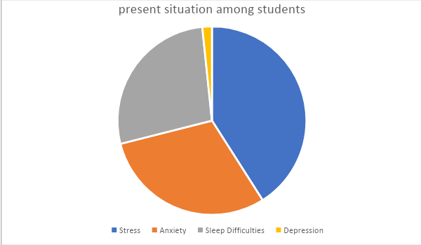
Image 9.1
The prevalence of moderate to the extremely severe levels of depression, anxiety, and stress were 39%, 43%, and 18%, respectively among students in Bangladesh. There were no significant gender differences in depression, anxiety, and stress. Risk factors for depression included coming from a lower-class family, being a cigarette smoker, and engaging in less physical exercise. Risk factors for anxiety and stress included being engaged in a relationship. The findings need to be further replicated among other Bangladeshi university students to help in the development of better intervention programs and appropriate support services targeting this vulnerable group including a focus of suicide prevention and awareness.
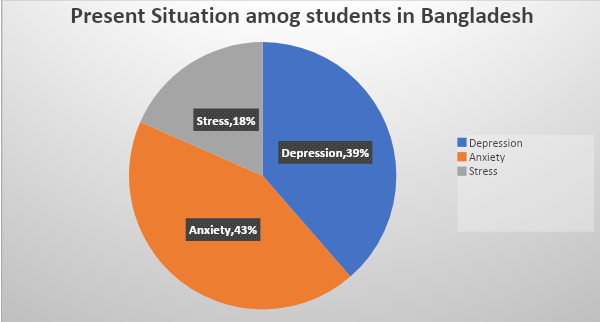
Image 9.2
Present situation among ULAB students
Formative research
Since, there are limited information and research on the impact of mental health issues. So, we have conducted a survey among ULAB Students. We conduct a study by using quantitative research. The survey took 3 days to collect data.
Methodology
The primary research methodology was quantities and evidence based rapid survey with 7 questionnaires in between 6 are close ended questions and 1 is open ended questions. It has been accomplished through online survey by Google forms also we conduct focused group discussions with the students of ULAB. And in-depth interviews also have been taken from few students who have faced severe mental health issues.
Survey objective
The survey has been conducted in order to find out (1) the exact number of what percentage students are conscious about mental health and also to (2) find out what kind of disorders they face most (3) what kind of stapes do they take for curing (4) is their surrounding people supportive to them or not, also (5) in which point we need to focus more in our campaign.
Findings
We conducted our survey in University of Liberal Arts Bangladesh (ULAB), in our survey data, there are 66.7% male participants and 33.3% are female.
| 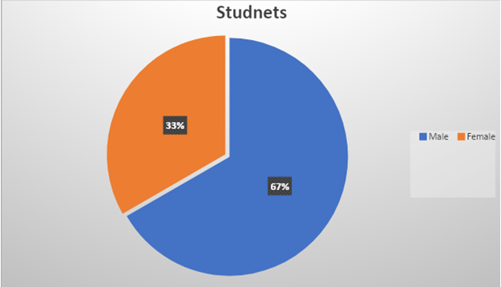 |
86.96%of them are concerned about their mental health.
| 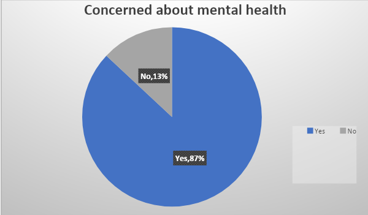 |
While asking them about the issues they are facing, 46% of the students said that they are suffering from depression, 28%from stress and 26%from other mental illness including anxiety disorders.
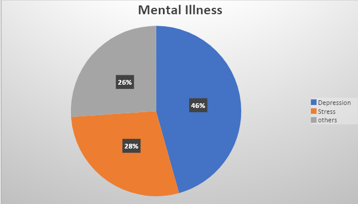
Sadly, only 36% of the students have been to psychiatrist or been a part of counseling.
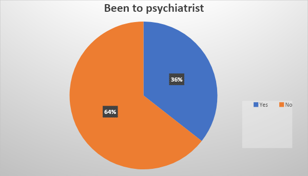
We surveyed online with the help of Google forms over 150 ULAB Students along with some other facilities and staffs. Our survey was mainly for quantitative data but we also got some qualitative data also by some short descriptive question.
Most of the responded students were male the percentage is 60 and female students responded the rest of 40 percentage. We have asked various types of questions to our interviewees. A sort description of our survey with quantitative data is given bellow:
|
No. |
Asked Questions |
Answers analysis |
|
01 |
Do you think mental health issues are real? |
All said yes. |
|
02. |
Are you concerned about your mental health? |
86% said they are concerned and rest 14% said they are not. |
|
03. |
Have you ever face any mental health issues? |
90% said positive and 10% said negative. |
|
04. |
What kind of issues have you faced? |
Depression 46%, Stress 28%, Anger 26%, |
|
05. |
Did you take any steps to cure it? |
57.1 were positive and 42.9 % were negative. |
|
06. |
Have you ever been to a psychiatrist/ consultant? |
36% were positive & 64 were negative. |
Along with yes/no questions we also asked a short descriptive question approximately 60% responded to this question written bellow:
07. If not, what are the reasons behind it?
The question was just after question no 6 which was Have you ever been to a psychiatrist/ consultant? Most of them told “I think I am okay that’s why” the percentage was 36% then another answer was “social stigma” which was almost 30% and rest answer was I can handle myself, I don’t think I need to go there, and don’t have proper guideline exactly where to go how to deal with them
Proposal
This is an increasing concern for the mental health and well-being of the students. It should be considered as a public health issue in Bangladesh. And that is why we will conduct ‘Individual Behavior Change Campaign’ in order to aware individuals about mental health that lead to social problems or promote awareness that lead to improved individual or social being.
As our goal to change the point of view of the society towards mental health related issues, this is also a Social mobilization campaign.
Finally, this campaign will try to approach Individual, Interpersonal, and Social approaches among participants from the group of ‘Behavior Change Communication’ also from ‘Social mobilization Communication’. And this campaign’s goal is to bring down the percentage of mentally disordered students from 84% to 50% in four month.
Audience Analysis
|
Primary Audience: |
|
|
Male Students (ULAB) |
In this particular age of life, Specially male student face pressure something like that what he will do after completing his study and take family responsibility. As a result, He feels depressed and addicted with drags. Finally he enters into mental diseases. |
|
Female Students (ULAB) |
Female students face huge family pressure in this age. For example, Family put pressure on her for marriage. So as a result they suffer mental diseases. They become hopeless and disappointed. |
|
Secondary Audience: |
|
|
Father (student’s) |
Normally if we think from our social point of view, Female are free with her father or don’t heisted to share something with him. So we remember, Father plays a big role n our research and campaign. |
|
Mother(student’s) |
On the other hand, Male are free with their mother to share everything with them. So they (M) are also important in our research and campaign. |
|
Other students (as a friend) |
A students spend most of his/her time with their friends so their friends know them better than others and we can get information from them about how they react or what role does they play to their friends, when they face any kind of mental health related issue. |
|
Relatives; Uncle/Aunts, other siblings(student’s) |
Sometimes we can see that male and female both have a relative or something like that who is special for him/her. They both share their personal issues with them, So n this fact, They (R) also important in our research and campaign. |
|
Tertiary Audience: |
|
|
Ayman Sadik (Public figure) |
It always seen, In this age students (both) follow some celebrity or public figure whose life, lifestyle influence them both male and female students. We choose Ayman Sadik so that he can play a motivational role in our campaign. |
|
Class Teachers(student’s) |
In some cases, students have some special teacher who take care of their study and they motivate for wellbeing. They also support them in their personal issues. They are also can be a part of our research and campaign. |
|
Mohit Kamal (psychotherapist)
|
Specialist doctor’s opinion on the matter of mental health can have a strong impact on the students. They are more likely to take their advice seriously once they realize the expert opinion and benefits from their valuable advice. |
|
ULAB student affairs office
|
As we know that in ULAB only ‘Student Affairs Office’ deal with any sort of student related issues and as they also have a student counseling servicer for the students. We can collaborate with them so the that we can get help form them also encourage the students to take services form ‘Student Affairs Office’ in any kind of mental health related issues. |
Primary Audience Behavior Analysis
By understanding and analyzing the KAP or Knowledge, Attitude and Practice of the Primary Audience we got idea about the behavioral patterns of our target audience. We analyze this by conducting focused group discussions.
Knowledge
Most of the students are aware of their mental health. They also know the different kinds of mental disorders. In most of the cases they suffer from depression and anxiety. But they don’t know how to get rid of this kind of mental disorders and how they can get the proper medical services from any psychologist. Even though in some cases the patient didn’t believe that by taking proper help from any psychologist or their elder one, they can get rid of this sort of mental issues.
Attitude
All the students may have to faced many kind of situation in their life, like study pressure, family and relationship problems, financial issues, better job expectation in future, addiction to drugs etc. because of this issues most of the students faces many kind of mental disorder. And when they face any mental disorder they often try to stay alone and become rude to others. In this situation they often do mistakes in their works and studies. They don’t take any necessary steps for curing. Most of them think that the people of this society will treat him/her as a mad if he/she goes to any psychologist.
Practice
In most cases the students who are going through any mental disorder, don’t want to share his/her problems or feelings. They try to hide their problems from others peoples. In this situation they become mentally weak day by day. Very few person share their problems or feelings only to their close one but they didn’t any medical services from any psychologist.
Goal and Objectives
Goal
To raise awareness against the Mental Health of the students who are current student of University of Liberal Arts Bangladesh (ULAB) SMART plan will be followed. We have chosen only Undergrads students of the University of Liberal Arts Bangladesh (ULAB).
Full meaning of SMARTS is the thing will be Specific, Measurable, Achievable, Realistic and Time Bounded.
According to our survey, we found 84% of students are facing different kinds of mental disorders. We will try to raise awareness to bring down this percentage from 84% to 50% in four months.
Objectives
|
Key Components |
Objectives |
|
1) Specific task |
Awareness campaign among running undergrads students of University of Liberal Arts Bangladesh (ULAB to increase awareness about mental health in order to bring Social Mobilization. We will make several materials like (Poster and Digital Story etc) to run our campaign and to change individual behavior in order to make a social change. |
|
2) Achievable Possibilities |
Yes, it is achievable to increase the awareness about mental health nearly half of our target audience. |
|
3) Sufficient Resources |
We will collaborate with other NGOs and private organizations for financial sources. |
|
4) Time |
We will aware the current undergrads student of University of Liberal Arts Bangladesh (ULAB) from 10th February 2020 to 10th June 2020. |
|
5) Communication Objectives |
According to our studies and survey we found 84% of students are facing different kinds of mental disorders. . We will increase awareness among them through discussion, expert’s suggestions and other communication so that we can reach to our desire output. |
|
6) Beneficiary Groups |
Undergrads students of University of Liberal Arts Bangladesh (ULAB) who are current student along with all departments. |
|
7) Materials |
Approaches: Awareness campaign and behavior change tools - Poster - Awareness Stories (online videos) - Audio Visual - T-shirts - Mugs |
|
8) Channel/Media |
- Internet - Conduct Workshop with doctors in our campus - Wall Art - ULAB TV and ULAB Radio, Ulabian Newspaper. - Leaflets - Ulabian Groups. (Facebook Group) |
|
9) Desire Output |
By june 2020 we will try to decrease the percentage from 84% to 50% |
In Bangladesh, the Government along with other health care organizations needs to take action. Policy changes and environmentally safe interventions for students are required to improve physical activity. Finally, the students need to consult themselves to doctor and other who can help about mental health, rather than an end-all solution.
Bibliography
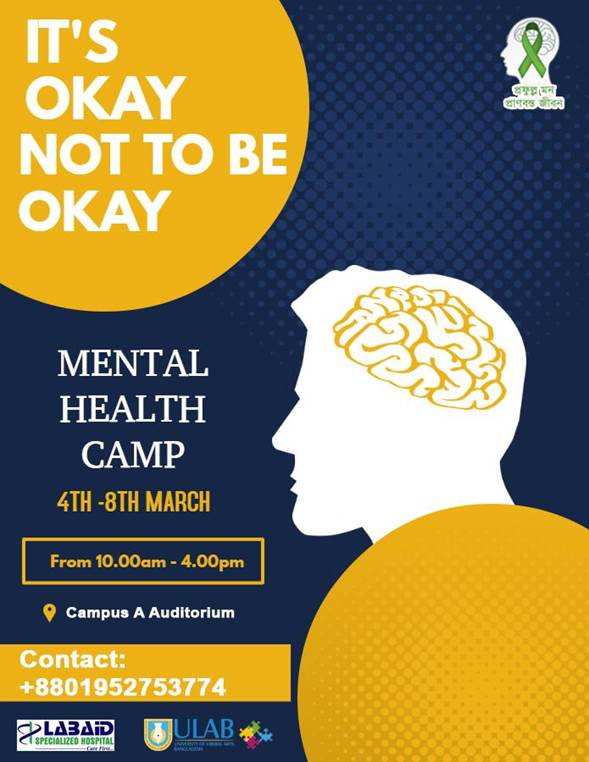
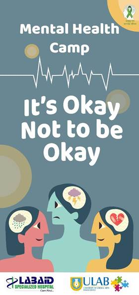
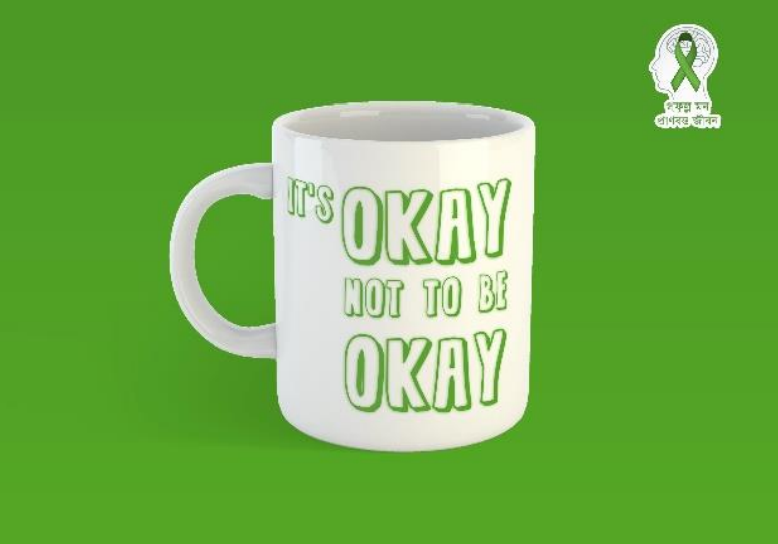
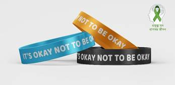
| 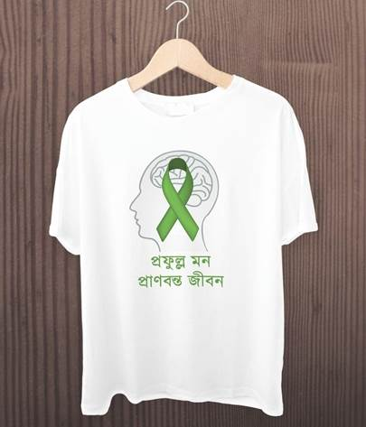 |
Learnings and outcomes (Self-reflection):
This was my first time addressing a social problem with the help of a campaign. During the process of writing a campaign proposal, I had to do a thorough research going on the field which definitely strengthened my research skill. Not only that, we had to design the logo, prepare communication materials all by ourselves consisting of Digital Story, Posters, Banners, Badge, T-shirt, stickers, Facebook page which so far improved my photo editing and designing skills. I got quite a grasp in adobe Photoshop and illustrator as well. This project was challenging as we had to work synchronously. Being someone who prefers to work alone, there was some trepidation at first, but I quickly learned to operate in a team and have since become a team player, which came in handy during my current internship